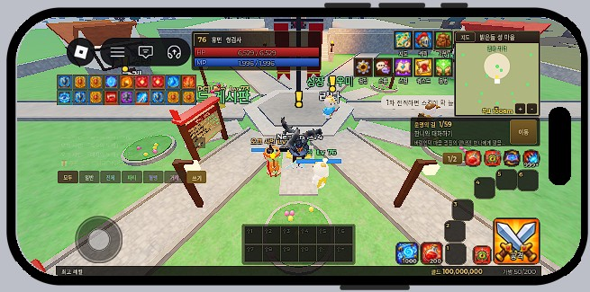

인터페이스 설명
폰 가로 화면 기준입니다. 번호는 그림과 같습니다.
전투 화면 (HUD)


- 1상태창 — 레벨·직업·HP·MP
- 2버프 줄 — 아이콘을 누르면 이름·남은 시간
- 3채팅 탭·로그 — 모두/일반/전체/파티/혈맹/거래, 누르면 접기
- 4메뉴 3×2 — 지도·캐릭·가방 / 스킬·퀘스트·힐러
- 5미니맵 — 지역 이름과 내 위치
- 6퀘스트 알림 — 지금 할 일과 [이동] (알아서 걸어감)
- 7자동 줄 — [1/2] 페이지, [HP] 자동 물약, [필드] 자동 사냥, [스킬] 자동 스킬, [탄] 자동 탄
- 8스킬 6칸 — 공격 둘레 1/4 원 (1페이지 1~6, 2페이지 7~12). 길게 누르면 빼기
- 9[공격] — 타겟을 때림 / 자동 공격
- 10아이템 칸 2개 — HP 회복약·귀환 주문서 (가방에서 바꿀 수 있음)
- 11하단 토글 칸 — 켜고 끄는 스킬·버프 (PC Shift+1~=). 칸의 [A] 배지 = 자동
- 12경험치 띠 · 골드 · 가방 칸
타겟 창은 몬스터를 누르면 화면 맨 위 가운데에 나타납니다 (이름·레벨·HP). 선공 몬스터는 빨간 원, 비선공은 노란 원.
캐릭터 선택

- 1캐릭터 목록 — 레벨·종족·직업, 마지막 접속 (누르면 고름)
- 2[게임 시작] — 고른 캐릭터로 들어감
- 3[새 캐릭터] — 종족·계열·성별·외모 고르기
- 4[삭제] — 고른 캐릭터 지우기 (확인 한 번 더)
- 5캐릭터 수 (최대 50)
- 6◀ ▶ 돌려 보기 (드래그도 됨)
- 7고른 캐릭터 3D 미리보기 — 장비·외형 그대로
버프 고르기 창

- 1걸린 버프 줄
- 2버프 판 — 용병 버퍼가 걸어 줄 버프를 고름(자동 버프 ⚙ 설정)
- 3[닫기]
흐름: 파티 맺기
- 상대 플레이어를 한 번 누름 → 이름 밑 작은 메뉴
- [파티 초대] → 상대 화면에 수락/거절
- 메뉴 › 소통 › 파티 탭에서 파티원 HP, 드랍 규칙(순서/주사위), 탈퇴
- 경험치는 가까이 있는 파티원끼리 나눔 (레벨 차 큰 사람은 덜 받음)
흐름: 자동 사냥 켜기
- 사냥터로 이동 (지도 › 사냥터 › [이동])
- 자동 줄 [필드] 켜기 → 가까운 몬스터부터 잡음
- [스킬] 켜면 공격 스킬도 자동. 하단 칸의 [A] 배지를 켜 둔 버프·토글은 알아서 유지
- [HP] 켜면 HP가 설정값 아래로 떨어지면 물약
- [필드] 길게 누르기 → 범위(가까이·보통·넓게·제자리)·대상·높은 레벨 건너뛰기 설정
흐름: 강화하기
- 가방 › 강화 주문서 누름 → [사용]
- 같은 등급의 장비를 고름 → 확률 표시 → [강화]
- 성공: +1 과 빛 / 실패: 깨져서 용의 비늘
PC 화면 설명은 테스트 뒤 추가 예정.